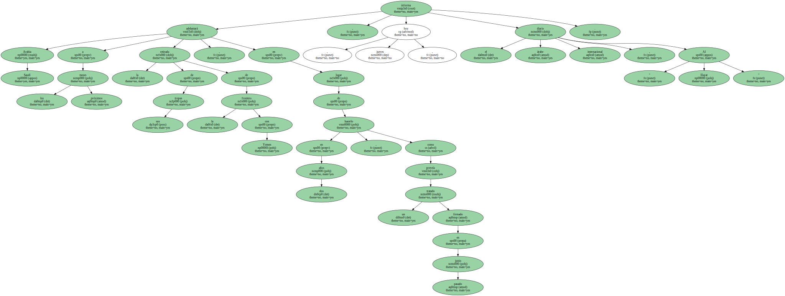
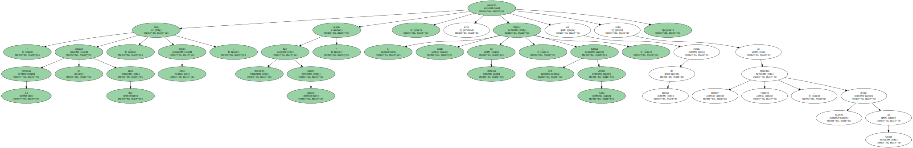
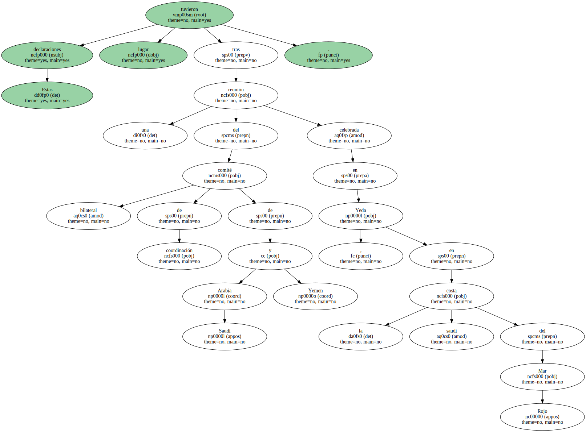
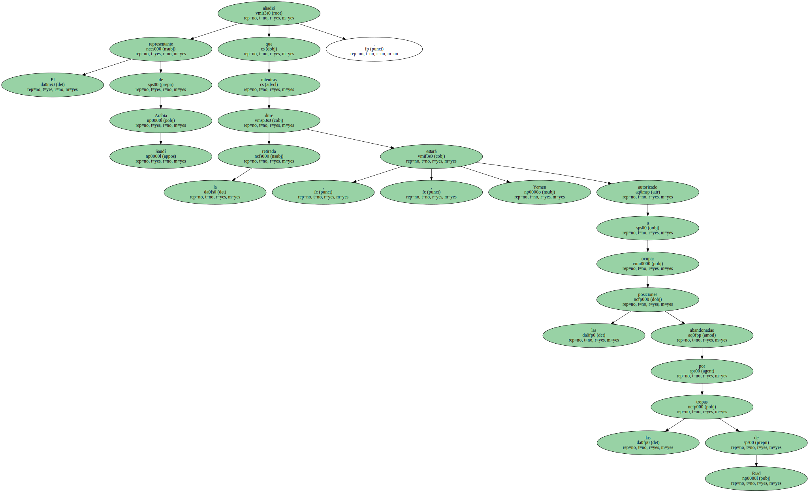
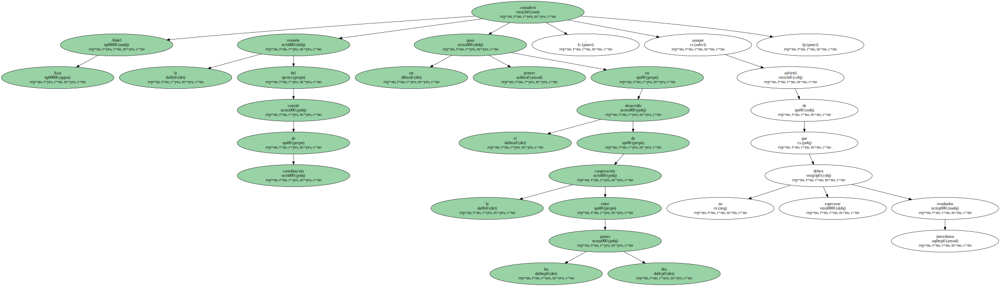
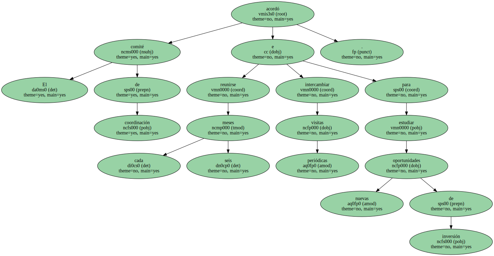

Arabia Saudí adelantará a los próximos meses la retirada de sus tropas de la frontera con Yemen , en lugar de hacerlo en dos años , como preveía un tratado firmado en junio pasado , informa hoy , jueves , el diario árabe internacional , " Al Hayat ".
" La retirada no tardará dos años , sino unos meses , según han decidido ambos países " , anunció ayer el titular saudí de Defensa , Sultan Ben Abdel Aziz , en rueda de prensa junto al primer ministro yemení , Abdel Karim Al Ariani.
Estas declaraciones tuvieron lugar tras una reunión del comité bilateral de coordinación de Arabia Saudí y Yemen celebrada en Yeda , en la costa saudí del Mar Rojo.
El representante de Arabia Saudí añadió que , mientras dure la retirada , Yemen estará autorizado a ocupar las posiciones abandonadas por las tropas de Riad.
Abdel Aziz consideró la reunión del comité de coordinación un primer paso en el desarrollo de la cooperación entre los dos países , aunque advirtió de que no deben esperarse resultados inmediatos.
En su encuentro de ayer , los representantes saudíes y yemeníes trataron principalmente sobre la colaboración del sector privado en futuras inversiones conjuntas , " por las amplias oportunidades que ofrece " , dijo Ariani.

El comité de coordinación acordó reunirse cada seis meses e intercambiar visitas periódicas para estudiar nuevas oportunidades de inversión.
